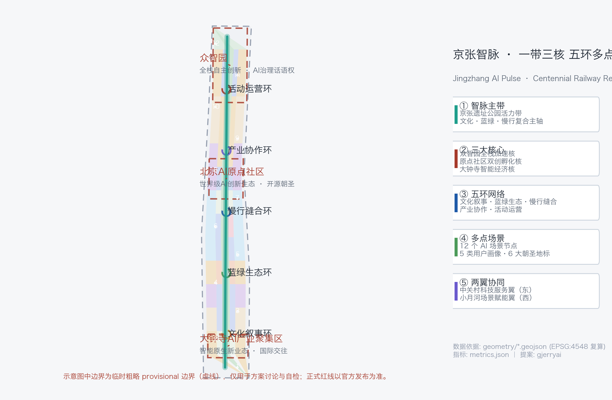
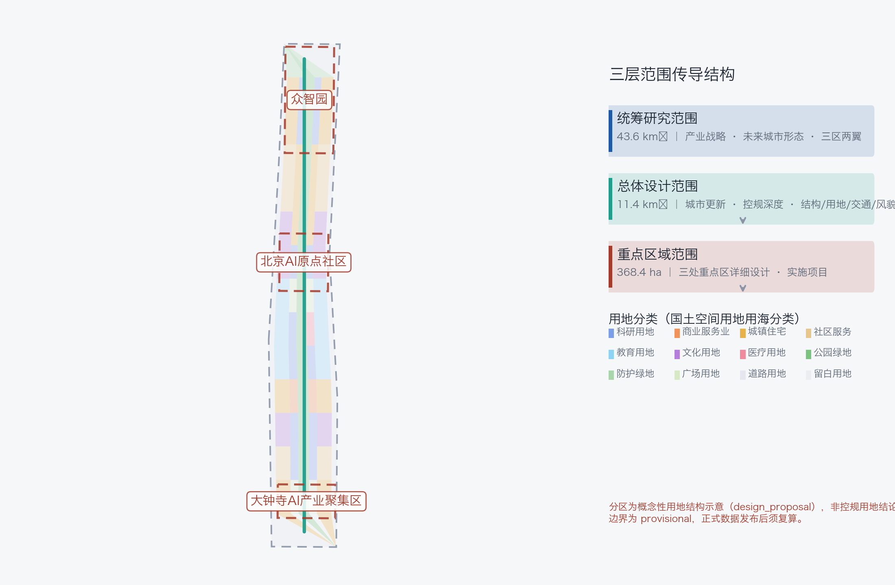
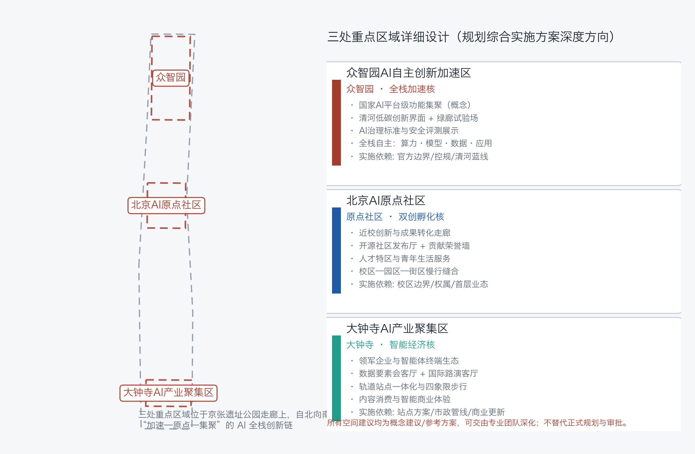
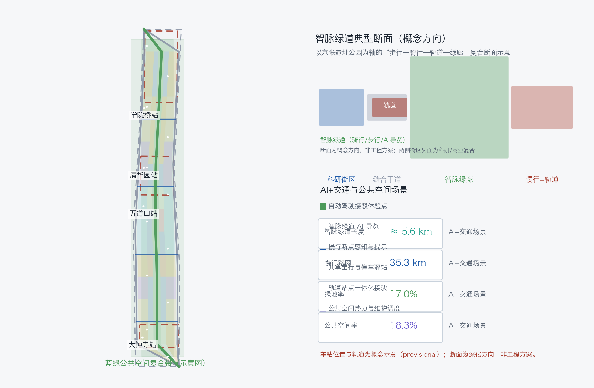
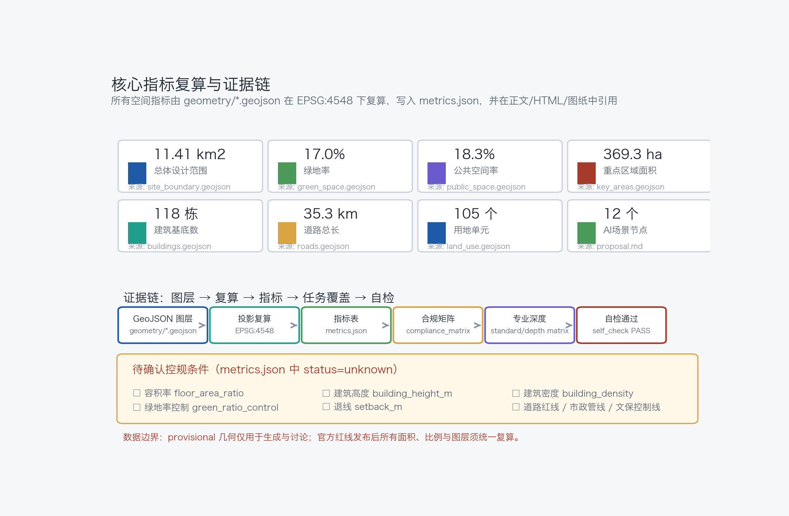

Jingzhang AI Pulse: One Belt, Three Cores, Five Loops — Urban Design for the Centennial Jing-Zhang AI Innovation Belt
A formal urban-design proposal for the Centennial Jing-Zhang AI Innovation Belt: the Jingzhang AI Pulse concept with one heritage belt, three key-area cores, five functional loops and 12 AI scenario nodes, prepared as an open, recomputable, concept-level proposal for professional deepening.
Jingzhang AI Pulse: One Belt, Three Cores, Five Loops — Urban Design for the Centennial Jing-Zhang AI Innovation Belt
This file is the complete English translation of proposal.md; all sections, claims, metrics and evidence references are aligned with the Chinese primary document.
Design Basis and Source List
This proposal takes the Announcement on Prequalification for the International Solicitation of Urban Design for the Centennial Jing-Zhang AI Innovation Belt, published by the Haidian Branch of the Beijing Municipal Commission of Planning and Natural Resources (2026-05-09), as its primary authoritative basis, and reads brief/site-package/design_brief.json, allowed_design_space.json, agent_taskbook.json, sources.json, enums/, ranges/planning_limits.json, schemas/, data/source_registry.json and data/processed/agent_fact_pack.md to organize every design decision [source:OFFICIAL-ANNOUNCEMENT] [source:SITE-PACKAGE] [source:SOURCE-REGISTRY] [source:PROCESSED-FACT-PACK]. The agent-facing open-call taskbook adds the three positionings, five functions, three areas and two wings, six mandatory tasks and unified boundary clauses [source:AGENT-TASKBOOK].
Source-use boundaries: data/source_registry.json registers 5 formal-ready sources (the official announcement, the agent taskbook, the Urban Design Measures, the Regulatory Detailed Planning Measures, and the National Land Use Classification Guide) and 1 provisional-only source (the provisional rough boundary). This proposal uses formal sources only for task evidence and professional-standard responses; the provisional boundary is used only for generation, display and self-check, never upgraded to an official redline [source:BOUNDARY-SOURCE] [source:KEY-AREA-SOURCE]. The readable links are [data:geometry/site_boundary.geojson#SITE-001], [data:geometry/key_areas.geojson#KEY-001], [data:geometry/key_areas.geojson#KEY-002] and [data:geometry/key_areas.geojson#KEY-003].
The proposal targets regulatory-plan-level urban design depth and an implementation-level direction for the three key areas; professional depth starts with [depth:existing_conditions_diagnosis]. The condition diagnosis is a conceptual diagnosis (breakpoint checklist) inferred from public information, not a survey conclusion; existing buildings, ownership and municipal baseline data await official materials.

Three-Level Scope Framework
The work is organized by the three scopes defined in the announcement ([standard:PROJECT-OFFICIAL-ANNOUNCEMENT]): the coordinated research area of 43.6 km² answers industry-ecosystem and future-city questions and produces the naming system and the three-areas-two-wings synergy loop; the overall design area of 11.4 km² implements the renewal framework, land-use structure, transport and municipal support and urban character, at the depth of [depth:three_level_scope_framework] and [depth:overall_spatial_structure]; the key detailed design area of 368.4 ha develops the three key areas, at the depth of [depth:three_key_area_detailed_design].
The three levels transfer progressively: the research level sets strategy, the overall level maps it onto 105 land-use parcels [metric:land_use_parcel_count], 118 conceptual building footprints [metric:building_count] and 12 renewal projects [metric:renewal_project_count], and the key areas verify implementability of parcels, buildings, transport, public space and AI scenarios. Spatial evidence is anchored on [data:geometry/site_boundary.geojson#SITE-001]; the overall area recalculation is [metric:site_area_sqm].
Boundary statement: this proposal uses the repository's provisional rough boundary (geometry_role=provisional_constraint, official_boundary=false, boundary_precision=provisional_rough) only for generation, self-check and design discussion; it is not an official redline, approval basis or precise-area conclusion [data:geometry/site_boundary.geojson#SITE-001]. The organizer's data gap does not block content scoring; once official polygons are published, all layers and area metrics must be recalculated.

| Level | Area | Design question | Proposal answer | Data anchor | | --- | --- | --- | --- | --- | | Coordinated research | 43.6 km² | How to organize the AI ecosystem and future city form | Five-chain synergy: university ideation–open source–enterprise transformation–public experience–global communication | compliance_matrix.json | | Overall design | 11.4 km² | How to map industry, renewal, transport and character | One Belt / Three Cores / Five Loops structure + land/buildings/roads/green layers | [data:geometry/land_use.geojson#LU-001], [data:geometry/roads.geojson#ROAD-001] | | Key areas | 368.4 ha | How to reach detailed design depth | Positioning–space–renewal–scenario–risk packages per area | [data:geometry/key_areas.geojson#KEY-001] |
Coordinated Research Area: Industry and Future City Research
The core proposition of the coordinated research area is a world-class AI innovation ecosystem and a future city form fit for AI-driven productive forces ([source:AGENT-TASKBOOK], [standard:PROJECT-AGENT-OPEN-CALL-TASKBOOK]). The proposal responds to the three positionings (Centennial Jing-Zhang Heritage Belt, Urban AI Living Belt, AI Fusion Innovation Belt), the five functions (full-stack AI self-reliance system, world-class AI innovation ecosystem, AI+ scenario empowerment paradigm, intelligent vibrant AI city, global discourse on AI governance) and the three-areas-two-wings layout:
**Naming and visual identity (agent.1)**: primary name "Jingzhang AI Pulse" (京张智脉, short JZ-Pulse); sub-brands by belt: Pulse-Heritage, Pulse-Living, Pulse-Fusion. The logo direction, "Rail Neuron", morphs two parallel rails into a neural node ring, using railway rust red (heritage) + Haidian tech blue (innovation) + AI pulse cyan (AI-native), extendable to signage, icons, data visualization and event identity. This is a concept direction and uses no existing trademarks or licensed fonts.
**Global AI ecosystem cases and transfer mechanisms (agent.2)**: six representative ecosystem cases with mechanisms transferable to Haidian — Silicon Valley Sand Hill Road (capital–technology–scenario loop), Israel innovation clusters (agile minimal teams), Singapore One-North (industry-city-human integration), Austin ATX (festival culture + tech community), Shenzhen Bay (platform services and scenario opening), Tokyo Shibuya (transit-oriented integrated development). All are conceptual summaries of public knowledge ([source:SOURCE-REGISTRY]) and are not assertions about any company or region.
**Three-areas-two-wings synergy loop**: Beijing AI Origin Community (world-class AI ecosystem; open source and commercialization) → Zhongzhiyuan AI Acceleration Area (full-stack self-reliance and governance discourse; scaling) → Dazhongsi AI Industry Cluster (AI-native new businesses; market realization); the Zhongguancun technology-service wing supplies capital, IP and global factors, and the Xiaoyue River scenario-empowerment wing supplies AI+ experiment fields and urban experience ([depth:overall_spatial_structure]). Spatially, the AI Pulse main belt links the three cores; the five loops organize synergy and experience; locations map onto [data:geometry/land_use.geojson#LU-001].
Future-city research covers four AI-native forms — transport, public services, lifestyle and governance — anchored on [data:geometry/land_use.geojson#LU-001], [data:geometry/public_space.geojson#PUBLIC-001] and [data:geometry/roads.geojson#ROAD-001]; all are concept directions for professional deepening.
Overall Design Area: Urban Renewal and Regulatory-Plan-Level Urban Design
The overall design area adopts the "One Belt / Three Cores / Five Loops / Many Nodes" structure: the belt is the Jingzhang AI Pulse main belt (Jing-Zhang Heritage Park vitality corridor), the cores are the three key areas, the loops are the heritage-narrative, blue-green, walkability, industry-synergy and event loops, and the nodes are 12 AI scenario nodes ([metric:ai_scenario_node_count]). The structure is evidenced by three layers: land use [data:geometry/land_use.geojson#LU-001], buildings [data:geometry/buildings.geojson#BLDG-001] and roads [data:geometry/roads.geojson#ROAD-001].
The renewal framework identifies three object types — heritage-stitching (along the railway park), industry-upgrading (inside the three key areas) and living-quality (residential and public-service wings). Low-efficiency identification uses a conceptual criterion of function mismatch, interface breakpoints and missing public space ([depth:overall_spatial_structure]); parcel-level judgment awaits regulatory plans and baseline data.
Development intensity and building control follow [standard:MOHURD-URBAN-DESIGN-MEASURES] and [standard:MOHURD-CONTROL-DETAILED-PLANNING], distinguishing known controls, design proposals and pending items. FAR, building height, density, green-ratio control and setbacks are all status=unknown in metrics.json ([metric:floor_area_ratio]) pending official regulatory conditions and must not be treated as approved values ([depth:development_intensity_controls]). Directional suggestions only: a "low-in, high-out" height gradient along the main belt, 6–12 storey street-block massing at key-area frontages, and an allowance for landmark nodes to be deepened by professional teams under official controls ([depth:height_massing_character]).
Detailed Design of Key Areas
Each key area follows a "positioning + spatial structure + building renewal + mobility + public space + AI scenario + implementation risk" package. Spatial extents are [data:geometry/key_areas.geojson#KEY-001], [data:geometry/key_areas.geojson#KEY-002] and [data:geometry/key_areas.geojson#KEY-003] (all provisional_constraint; [metric:key_area_count]); recalculated areas are [metric:zhongzhiyuan_ai_acceleration_area_sqm], [metric:beijing_ai_origin_community_sqm] and [metric:dazhongsi_ai_industry_cluster_sqm], totaling [metric:key_area_total_area_sqm]. Depth is checked by [depth:three_key_area_detailed_design].

**Zhongzhiyuan AI Acceleration Area** (garden-style full-stack innovation district): a low-carbon innovation and industry-display frontage along the Qinghe River; core nodes are the Full-Stack Innovation Pavilion and the AI Governance Standard Sandbox; green space carries open testing and governance demonstration; building renewal is mainly new-build plus retrofit (concept). Implementation depends on official boundary, regulatory conditions, Qinghe blue-line and flood-protection conditions.
**Beijing AI Origin Community** (campus-adjacent commercialization and talent community): an Open-Source Release Hall, a Commercialization Street and a Contributor Honor Wall around campus-adjacent innovation; talent services and youth living are added; campus–park–block walkability stitching resolves commute and interaction breakpoints; renewal is mainly retrofit plus retention. Implementation depends on campus boundaries, ownership and ground-floor uses.
**Dazhongsi AI Industry Cluster** (urban intelligent-economy and international-exchange district): an International Pitch Lounge, a Data-Factor Lounge and an Agent/Terminal Experience Street around transit-node integration and four-quadrant walkability; commercial and plaza uses are compounded ([data:geometry/land_use.geojson#LU-001]); renewal is mainly retention plus functional reuse. Implementation depends on the station scheme, municipal networks and commercial renewal conditions.
AI Innovation Ecosystem, Personas, and AI+ Scenarios
**Personas (5 types, [source:AGENT-TASKBOOK])**: open-source developers (release, collaboration, testing, reputation — no personal behavior tracking, aggregate statistics only); startup teams (low-cost offices, compute access, product test fields — compute and data by separate authorization); enterprise visitors (showcase, business, international reception, recruiting — trademarks cleared); local residents (commute, leisure, community services, low-disturbance renewal — no commercial profiling); university faculty and students (commercialization, cross-campus collaboration, daily walking — campus data and research results by authorization).
**Scenario cards (12, requirement ≥10)**, each with spatial carrier, served personas, operational data, privacy boundary, human review, operator and risk:
| No. | Scenario card | Spatial carrier | Data and privacy boundary | Suggested operator | | --- | --- | --- | --- | --- | | S-01 | Dazhongsi AI Pilgrimage Plaza | Station plaza [data:geometry/public_space.geojson#PUBLIC-001] | Crowd flow aggregated only | District operation platform + locality | | S-02 | Agent and Terminal Experience Street | Dazhongsi commercial street | Experience data anonymized, no tracking | Commercial operator | | S-03 | Data-Factor Lounge (test-validation) | Dazhongsi R&D commercial node | Licensed, auditable sandbox | Data services + regulatory sandbox | | S-04 | Jing-Zhang Railway Culture Memory Hall | Qinghuayuan station heritage concept node [data:geometry/constraints.geojson#CONSTRAINTS-004] | Public cultural data; portrait licensing | Heritage institutions | | S-05 | Open-Source Release Hall | Origin Community | Public code; aggregated metadata | Open-source community operator | | S-06 | Developer Contributor Honor Wall | Origin Community public space | Authorized contribution info only | Community + event operators | | S-07 | AI Pulse Greenway Station | Green corridor [data:geometry/green_space.geojson#GREEN-001] | Minimal location data | Park operator | | S-08 | Edge-Compute Service Station | Belt-wide nodes | On-demand compute authorization | New-infrastructure operator | | S-09 | Autonomous Shuttle Experience Point (test-validation) | Northern greenway | Vehicle data anonymized; safety disclosure | Test operator + regulatory filing | | S-10 | Full-Stack Innovation Pavilion (test-validation) | Zhongzhiyuan | Graded public release of evaluation results | Industry alliance + evaluation body | | S-11 | AI Governance Standard Sandbox (test-validation) | Zhongzhiyuan | Transparent evaluation and red-team process; human review | Standards body + governance lab | | S-12 | Qinghe Low-Carbon Innovation Corridor | Zhongzhiyuan Qinghe frontage | Public environmental data; no behavior capture | Park + ecology authorities |
S-03, S-09, S-10 and S-11 are AI industry test-validation scenarios (requirement ≥3); all are labeled test-validation, not approved operations ([depth:three_key_area_detailed_design]). Total nodes: [metric:ai_scenario_node_count].
AI governance principles: data minimization, public sources, explainability, human review; urban agents only assist in identifying walking breakpoints, public-space heat, facility maintenance and business-service needs, never replacing planning approval or producing unauthorized personal profiles ([standard:PROJECT-AGENT-OPEN-CALL-TASKBOOK]).
Land Use, Building Scale, and Retain-Renovate-Demolish Strategy
Land use follows [standard:MNR-LAND-USE-CLASSIFICATION-GUIDE] with national classification codes ([depth:land_use_layout]): research land (0802) clusters at the three cores; commercial services (05) at Dazhongsi and Wudaokou; residential (0701) and community services (0702) on the flanks; education (0804) in the university band; culture (0803) at heritage nodes; health (0806) mid-belt; parks (1401) form the AI Pulse main belt; buffers (1402) along the ring-road interface; plazas (1403) at station nodes; roads (1207) form the east-west stitching skeleton; reserve (16) retains flexibility ([data:geometry/land_use.geojson#LU-001]). The 105 parcels cover the submitted boundary without gaps or overlaps ([metric:land_use_parcel_count]).
Building scale: 118 conceptual footprints, about [metric:building_footprint_area_sqm] m² ([data:geometry/buildings.geojson#BLDG-001]). Retain–renovate–demolish ([depth:retain_renovate_demolish]) is directional only: new-build-plus-retrofit at Zhongzhiyuan, retrofit-plus-retention at the Origin Community, retention-plus-functional-reuse at Dazhongsi; every building is marked renewal_measure=pending_control pending official baseline, ownership and engineering conditions. Heights and intensity are pending ([metric:building_height_m], [metric:building_density]).
Transport, Rail, Municipal Infrastructure, and Public Services
Mobility ([depth:traffic_rail_slow_parking]): two longitudinal stitching arterials, east-west branch roads and the AI Pulse greenway form a composite network; total centerline length is [metric:road_length_m] m ([data:geometry/roads.geojson#ROAD-001]); the ~5.6 km greenway carries walking, cycling and AI-guided tours; transit-node integration takes Dazhongsi, Wudaokou, Qinghuayuan and Xueyuanqiao as concept nodes with four-quadrant walkability and station-city interface stitching. The walking-breakpoint checklist is a conceptual diagnosis to be verified against official road redlines ([data:geometry/constraints.geojson#CONSTRAINTS-001]).
Municipal and new infrastructure ([depth:municipal_new_infrastructure]): a "new-infrastructure station" concept combining distributed energy, edge compute, smart poles and IoT sensing, integrated with conventional municipal works; pipelines, energy, drainage, flood and fire capacity are all prerequisites for formal deepening, never invented values. Public services are configured in three classes — innovation-service platforms, talent-living services and community services — with radii and operating models as concept proposals.

Blue-Green Network, Public Space, and Urban Character
Blue-green system ([depth:blue_green_public_space]): the Jing-Zhang Heritage Park vitality corridor is the spine, connecting Qinghe, Xiaoyue River blue-green interfaces and station plazas into a continuous north-south and east-west green network; green area [metric:green_area_sqm] m², green ratio [metric:green_ratio]; public space [metric:public_space_area_sqm] m², public-space ratio [metric:public_space_ratio] ([data:geometry/green_space.geojson#GREEN-001], [data:geometry/public_space.geojson#PUBLIC-001]). The vitality corridor carries three public-space components: the Developer Walkway, the Open-Source Showcase Corridor and the AI Milestone Park ([depth:blue_green_public_space]).
**AI pilgrimage landmarks and honor-display system (6, requirement ≥3, [source:AGENT-TASKBOOK])**: ① Jingzhang AI Pulse Origin Monument (concept node at the Qinghuayuan station heritage site, marking the convergence of railway and AI origins); ② Agent Contributor Honor Wall (Origin Community, recording selected contributors and Agent names); ③ Open-Source Showcase Corridor (Wudaokou greenway segment); ④ AI Milestone Park (Zhongzhiyuan); ⑤ Developer Walkway (main belt, translating railway-ballast texture into paving); ⑥ Global AI Pilgrimage Plaza (Dazhongsi). All are conceptual landmarks respecting heritage, green-line and safety constraints, to be deepened by professionals and authorities ([depth:blue_green_public_space]).
Urban character: a base palette of railway rust red + Haidian tech blue + AI pulse cyan; four directional controls — height gradient along the greenway, roof form (green roofs/terraces), street frontage (public ground floors) and public-art guidance — organized under [standard:MOHURD-URBAN-DESIGN-MEASURES] and [standard:MOHURD-ARCH-DESIGN-DEPTH-2016]; all character conclusions are design proposals pending regulatory and heritage conditions. Signage and wayfinding extend the Rail Neuron identity system with no unlicensed fonts or images.
Renewal Projects, Implementation Policy, and Phasing
Renewal project list (12 items, [metric:renewal_project_count], [depth:renewal_project_list]): JZ-01 AI Pulse greenway south stitching (public space/mobility, near-term); JZ-02 Dazhongsi four-quadrant walkability (transit integration, near-term); JZ-03 Dazhongsi AI Pilgrimage Plaza (public space, near-term); JZ-04 Origin Community Open-Source Release Hall and Honor Wall (renewal/operation, near-term); JZ-05 campus–park–block walking stitching (near-term); JZ-06 Jing-Zhang Railway Culture Memory Hall (heritage, mid-term); JZ-07 Zhongzhiyuan Qinghe low-carbon frontage (mid-term); JZ-08 Full-Stack Innovation Pavilion (mid-term); JZ-09 Edge-Compute and Energy Station (mid-term); JZ-10 Data-Factor Lounge (mid-term); JZ-11 Wudaokou node and north greenway renewal (long-term); JZ-12 wing public services and the Global Pilgrimage Route (long-term).
Phasing ([depth:phasing_implementation]): near-term pilot 0–3 years ([metric:phase_1_area_sqm] m², [data:geometry/phasing.geojson#PHASE-1]); mid-term renewal 3–7 years ([metric:phase_2_area_sqm] m², [data:geometry/phasing.geojson#PHASE-2]); long-term deepening 7–15 years ([metric:phase_3_area_sqm] m², [data:geometry/phasing.geojson#PHASE-3]). The solicitation window (2026-08-07 to 08-31) is the submission period and is strictly distinct from implementation phasing.
**Global AI event system and long-term operation (agent.6, concept)**: an annual "Jingzhang AI Pilgrimage Week" (heritage + industry + community tracks), quarterly open-source conferences and hackathons, monthly scenario open days, a developer-community points and contributor-memory system, global communication (Global Developer Honor Wall) and a conversion pathway (event → scenario opening → incubation → acceleration → landing). All events, recruitment, policy and funding statements are concept proposals for professional deepening and are not confirmed government arrangements ([standard:PROJECT-AGENT-OPEN-CALL-TASKBOOK]).
Metrics, Area Recalculation, and Compliance Matrix
Metrics are managed in three classes ([depth:metrics_recalculation]): (1) spatial metrics recomputed directly from the submitted geometry in EPSG:4548 — overall area [metric:site_area_sqm], green ratio [metric:green_ratio], public-space ratio [metric:public_space_ratio], building footprint [metric:building_footprint_area_sqm], road length [metric:road_length_m], and phase areas ([metric:phase_1_area_sqm] etc.) ([standard:MOHURD-CONTROL-DETAILED-PLANNING]); (2) control metrics pending official regulatory plans — FAR [metric:floor_area_ratio], height [metric:building_height_m], density [metric:building_density], green-ratio control [metric:green_ratio_control], setback [metric:setback_m], all status=unknown; (3) operational performance metrics (AI innovation index, talent density, event participation) as concept directions pending operational data.
Area recalculation: overall 11.41 km² ([data:geometry/site_boundary.geojson#SITE-001]); key areas 369.3 ha total ([data:geometry/key_areas.geojson#KEY-001] to #KEY-003). All values are consistent across narrative, HTML, A3/A0 drawings and self-check.
Compliance: compliance_matrix.json covers announcement tasks 1.3.1–1.5.3.3 (17 items) and agent.1–agent.6 (6 items), 23 mandatory tasks in total, each linked to sections, layers, metrics, drawings, HTML pages, sources, assumptions and self-checks; standard_matrix.json covers 5 mandatory standards plus 1 depth reference standard; design_depth_matrix.json has all 15 core depth items complete. See [metric:key_area_count] layers and [depth:metrics_recalculation].

Risk, Copyright, and Compliance
Risks and data gaps ([depth:risk_missing_data]): (1) boundary risk — provisional geometry for generation and self-check only, full recalculation upon official publication ([data:geometry/constraints.geojson#CONSTRAINTS-001]); (2) regulatory risk — FAR, height, density, setback, road redline and municipal capacity pending official attachments; (3) baseline risk — existing buildings, ownership and heritage control lines pending professional surveys; (4) operation risk — events, recruitment and policies are concept proposals; (5) privacy risk — scenario design follows data minimization and human review.
Copyright and compliance: this proposal was generated by AI Agent (gjerryai / JingZhangBelt-Studio); no unlicensed fonts, images, trademarks, portraits or copyrighted materials are used; all figures, icons and diagrams are self-made; license: COMMUNITY-DISPLAY-ONLY, detailed in report/copyright_statement.md ([source:OFFICIAL-ANNOUNCEMENT]). This proposal does not claim official approval, approved regulatory plans, final land ownership, final construction scale or guaranteed implementation; all spatial proposals are concept suggestions, reference schemes or material for professional teams to deepen.
References
- brief/public-brief.md
- brief/site-package/design_brief.json
- brief/site-package/allowed_design_space.json
- brief/site-package/agent_taskbook.json
- brief/site-package/sources.json
- brief/site-package/enums/
- brief/site-package/ranges/planning_limits.json
- brief/site-package/schemas/*.json
- brief/site-package/geometry/provisional_boundaries.geojson
- data/source_registry.json
- data/processed/agent_fact_pack.md
- docs/formal-submission-guide.md
- Machine-readable citation index: [source:OFFICIAL-ANNOUNCEMENT], [source:AGENT-TASKBOOK], [source:SITE-PACKAGE], [source:SOURCE-REGISTRY], [source:PROCESSED-FACT-PACK], [source:BOUNDARY-SOURCE], [source:KEY-AREA-SOURCE], [standard:PROJECT-OFFICIAL-ANNOUNCEMENT], [standard:PROJECT-AGENT-OPEN-CALL-TASKBOOK], [standard:MOHURD-URBAN-DESIGN-MEASURES], [standard:MOHURD-CONTROL-DETAILED-PLANNING], [standard:MNR-LAND-USE-CLASSIFICATION-GUIDE], [standard:MOHURD-ARCH-DESIGN-DEPTH-2016], [depth:metrics_recalculation], [data:geometry/site_boundary.geojson#SITE-001], [metric:site_area_sqm]